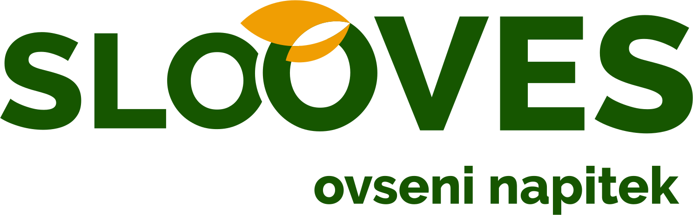
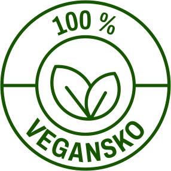
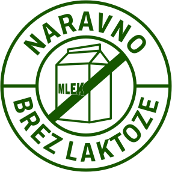
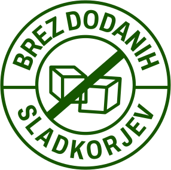
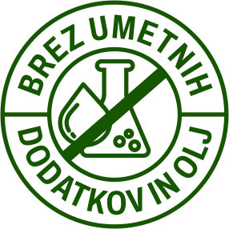
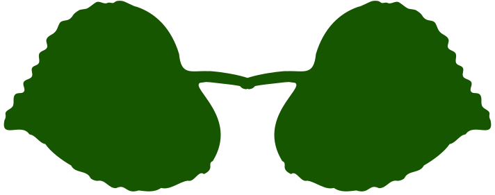

Doma v vsakem požirku.
Sestavine




Družinska kmetija
Besedilo sledi.

Postopek
Besedilo sledi - koraki od setve do polnjenja.
Poreklo
Besedilo sledi - kratke transportne poti, podpora slovenskim kmetom, sledljivost od njive do kozarca.
Uporaba
Besedilo sledi - preprosto, brez receptov.
Prodajna mesta
Besedilo sledi - seznam trgovin in datum, od kdaj je napitek na voljo.
Pišite nam
Sledi - e-naslov, telefon in povezavi na Instagram in TikTok.